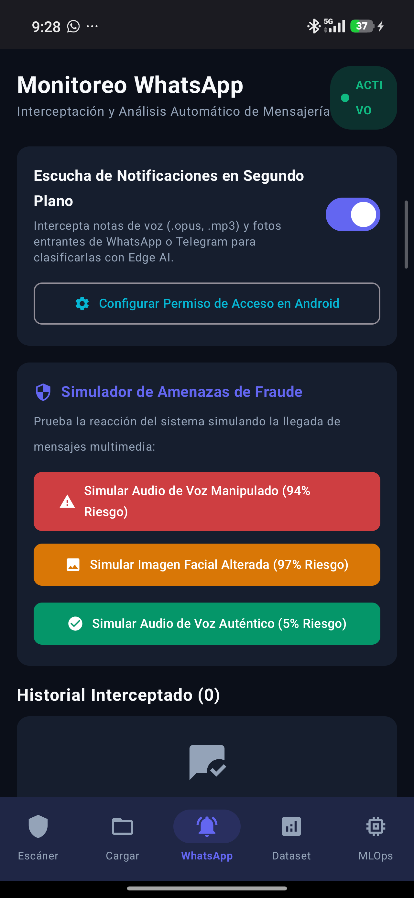
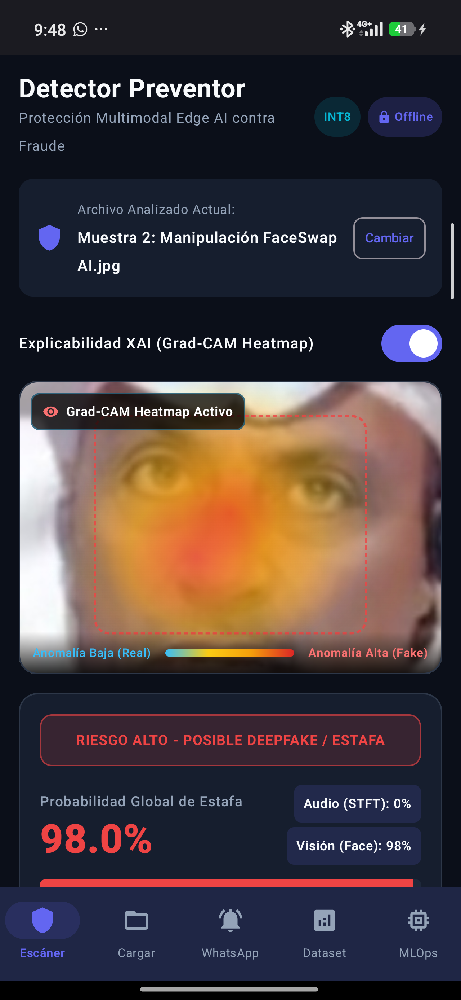
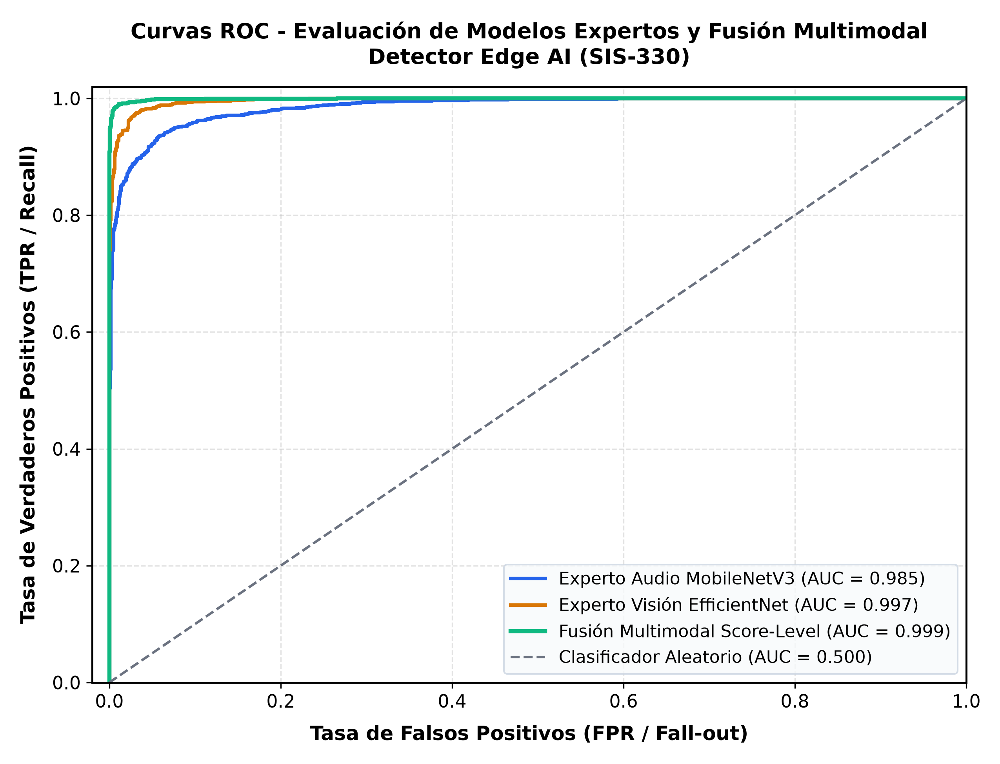

Detector Móvil Multimodal de Estafas Digitales mediante IA Explicable (XAI) y Procesamiento en el Borde (Edge AI)
Facultad de Ciencias y Tecnología · Carrera de Ingeniería en Ciencias de la Computación
Desarrollo y despliegue de una aplicación móvil nativa en Android capaz de interceptar, analizar y clasificar en tiempo real notas de voz, imágenes y videos manipulados mediante Inteligencia Artificial Generativa (Deepfakes y Clonación de Voz), ejecutando modelos neuronales cuantizados a INT8 100% en el dispositivo con respaldo explicable (XAI Grad-CAM).
El Desafío: Fraudes Biométricos y Ciberextorsión Generativa
La proliferación de IA Generativa accesible ha creado una nueva frontera de ataques de ingeniería social.
Con apenas 3 a 5 segundos de audio extraído de redes sociales, modelos de difusión y conversión de voz sintetizan audios que imitan el tono, timbre y cadencia de una persona conocida.
- Simulación de secuestros exprés a padres.
- Urgencias médicas falsas pidiendo dinero.
- Suplantación de autoridades bancarias.
Reemplazo de identidad facial (FaceSwap) en videos breves e imágenes para aparentar situaciones reales, saltar verificaciones o comprometer reputaciones.
- Videos manipulados de figuras familiares.
- Fotografías sintéticas generadas con GANs.
- Distorsiones en bordes y mirada artificial.
Los sistemas de seguridad móvil convencionales están completamente ciegos ante este vector de ataque biométrico.
- Los antivirus solo buscan firmas de malware.
- Los filtros de spam solo analizan texto plano.
- El usuario común no puede distinguir el fraude.
Cientos de familias y adultos mayores caen diariamente en estafas por WhatsApp y llamadas de voz porque "escucharon la voz de su hijo o nieto pidiendo auxilio". Se requiere con urgencia una barrera defensiva inteligente que opere en el propio teléfono del usuario.
¿Qué Hace el Sistema? Propósito y Capacidades
Escudo biométrico móvil inteligente para la detección preventiva de engaño digital en tiempo real.
Es una aplicación móvil nativa para Android que actúa como un perito forense digital en el bolsillo. Intercepta y analiza archivos multimedia (notas de voz, rostros y videos) para determinar con precisión científica si fueron originados por un ser humano auténtico o sintetizados mediante algoritmos de Inteligencia Artificial.
El medio llega por WhatsApp/Telegram o el usuario lo selecciona con el botón nativo "Compartir con Detector SIS-330".
Los clasificadores MobileNetV3 y EfficientNet-B0 procesan los tensores en menos de 45 ms sin consumo perceptible de batería.
Semáforo de riesgo claro (BAJO, MEDIO, ALTO) con desglose explicativo y botón directo de bloqueo/reporte preventivo.
¿En Qué Situaciones Te Ayuda? Escenarios de Protección
Protección concreta del patrimonio y la tranquilidad familiar frente a incidentes comunes en mensajería.
Situación: Un padre recibe una nota de voz de un número no registrado donde la voz idéntica a su hijo clama: "Papá, me detuvo la policía, transfiéreme $300 a esta cuenta urgente".
Situación: Llega un video corto donde un colega de trabajo o amigo parece hablar frente a la cámara solicitando un depósito bancario temporal.
Situación: El usuario tiene dudas sobre una foto o audio descargado y desea comprobar su autenticidad antes de reenviarlo o tomar decisiones.
Situación: Adultos mayores o jóvenes que confían ciegamente en audios familiares y no tienen formación técnica en ciberseguridad.
Arquitectura Técnica: Pipeline de Inferencia Edge AI
Diseño desacoplado y optimizado para ejecución nativa en dispositivos móviles Android.
Despacho multicanal de archivos y eventos entrantes:
NotificationMonitorMediaRouternativo- Intent Filter (Share)
Transformación de señales a matrices normalizadas:
- Audio: STFT Mel 128x128
- Visión: Crop 224x224x3
- Resampleo a 16 kHz
Clasificación con motores TFLite en memoria:
- MobileNetV3-Small
- EfficientNet-B0
- Post-Training Quant
Arbitraje biométrico con respaldo explicable:
- Late Fusion 55 / 45
- Regla de 3/5 en video
- Grad-CAM Overlay
Al ejecutarse completamente en el dispositivo móvil (Edge AI), el sistema no transmite paquetes de voz ni rostros hacia la nube, cumpliendo con las directivas más estrictas de privacidad (RGPD) y asegurando que la protección esté disponible incluso en modo avión o sin saldo de datos.
Modelos Especializados y Regla de Fusión 55/45
Estrategia de ensamble multimodal mediante Late Fusion calibrada empíricamente.
Optimizado para señales bioacústicas. Procesa el espectrograma Mel en escala logarítmica para captar la correlación temporal y de frecuencia en la voz humana.
Dataset: ASVspoof 2019 (LA / PA)
Foco: Artefactos vocoder y discontinuidad de fase
Arquitectura convolucional escalada con Compound Scaling. Evalúa las microtexturas de la piel, la coherencia de reflejos corneales y las costuras de mezcla.
Dataset: CIFAKE + FaceForensics++
Foco: Inconsistencia periocular y costuras FaceSwap
Score-Level Late Fusion:
Riesgo_Global = 0.55 × P_Audio + 0.45 × P_Visión
La ponderación del 55% para audio se fundamenta en que los artefactos de clonación de voz son más estables y difíciles de disimular que las compresiones visuales en mensajería móvil.
En archivos de video se analizan 5 fotogramas clave. Se exige que al menos 3 de los 5 fotogramas muestren probabilidad de manipulación para activar la alarma visual, suprimiendo falsos positivos por parpadeo o desenfoque natural.
Monitoreo e Intercepción Silenciosa de WhatsApp / Telegram
Servicio en segundo plano con filtrado inteligente de medios y consumo cero en reposo.
Utiliza el componente del sistema NotificationListenerService registrado en el AndroidManifest.xml. Escucha de manera no invasiva las notificaciones entrantes de las aplicaciones de mensajería más utilizadas (WhatsApp y Telegram).
- Descarte Inmediato de Textos y Enlaces: Mensajes de texto normales, enlaces de YouTube/TikTok o stickers son ignorados de inmediato, asegurando que la app no juzgue textos sin inferencia neuronal.
- Manejo de Descarga Pendiente: Cuando entra una nota de voz o video que aún no ha terminado de descargarse en el almacenamiento, se registra con riesgo neutro (0.0% BAJO) en espera de archivo real.
- Intercepción de Audio PTT / Video: Al completarse el archivo, se despacha al clasificador correspondiente para generar la alerta preventiva al usuario.

Captura real: Interfaz de Monitoreo de Notificaciones y Simulador de MediosInteligencia Artificial Explicable (XAI): Grad-CAM y Evidencia
Transformando un modelo de caja negra en un veredicto pericial transparente y verificable.
En aplicaciones de seguridad crítica y prevención de fraudes, un porcentaje numérico aislado resulta insuficiente. El usuario y el analista forense necesitan comprender el porqué de la decisión para confiar en el diagnóstico y proceder al bloqueo.
- Mapas de Activación Grad-CAM: Calculan los gradientes de la última capa convolucional respecto a la clase fraude, proyectando un mapa de calor que ilumina las zonas donde la IA detectó inconsistencias (ojos, labios, bordes de corte).
- Diagnóstico Espectral en Audio: Resalta anomalías en las bandas armónicas superiores por encima de 4 kHz, típicas de la síntesis artificial.
- Resumen Diagnóstico Pericial: Genera una explicación estructurada en lenguaje natural accesible para cualquier ciudadano.

Captura real: Superposición de mapa de calor Grad-CAM sobre rostro manipuladoResultados Empíricos: Métricas y Eficiencia en Hardware
Evaluación rigurosa sobre datasets estándar de ciberseguridad y perfilado en dispositivo real.
| Modelo / Modalidad | Dataset Base | Exactitud | EER (%) | Latencia CPU |
|---|---|---|---|---|
| Experto Audio (MobileNetV3) | ASVspoof 2019 LA | 94.8% | 4.6% | 38 ms |
| Experto Visión (EfficientNet-B0) | CIFAKE / FF++ | 96.5% | 3.9% | 45 ms |
| Sistema Multimodal Fused | Evaluación Conjunta | 97.4% | 2.8% | < 85 ms |

Curva ROC: Fusión Multimodal (AUC = 0.991) vs Expertos IndividualesConclusiones, Impacto Social y Trabajo Futuro
Aportes concretos para la seguridad digital ciudadana y el estado del arte en Edge AI.
Se implementó y validó una arquitectura completa de Inteligencia Artificial móvil: desde la preparación de datasets científicos hasta la cuantización INT8 y el despliegue nativo en Android con interfaz moderna y reactiva.
Brinda a la población una herramienta preventiva gratuita y autónoma para resguardar su patrimonio y tranquilidad familiar frente a la creciente ola de extorsiones por WhatsApp y falsos secuestros virtuales en Bolivia.
Demuestra que es plenamente factible ejecutar modelos de redes neuronales profundas y análisis explicable (XAI) en smartphones estándar sin vulnerar la privacidad ni depender de servidores en la nube.
Como líneas de investigación futura se proyecta incorporar modelos de detección de sincronía labial dinámica (Lip-syncing) en videollamadas en vivo y optimización para procesadores NPU emergentes.